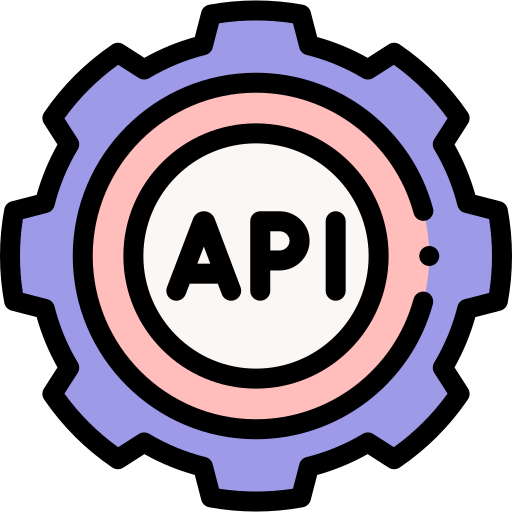

My work
Pokedex
The Pokedex app is a vanilla Javascript application that fetches data from an external Pokemon API and allows the user to view and search for Pokemons. Once a Pokemon is selected, a modal will pop up with details about the respective Pokemon.
Tech Stack:
- JavaScript
- HTML5
- CSS3
- External API
Movie API

Movie_api is the server-side component of a movies web application. This API will provide users with information about different movies, directors, and genres.
Tech Stack:
- Node
- Express
- REST
- MongoDB
- Mongoose
Cineflix
Cineflix is the client-side app that connects with a movie database: movie_api. Together they form CineFlix, a responsive single-page application allowing user to find information about movies and bookmark them in a personal list.
Tech Stack: MERN
- React (client-side)
- Node, MongoDB, Express (server-side)
- Parcel (build tool)
- JSX
- Vanilla JS (ES2015+), HTML, CSS,
- Bootstrap (UI design and responsiveness)
Cityvent

Cityvent a React meet app that will allow users to find events in specified cities and theirs details. The app was built using React and Javascript, with Unit, Integration, User Acceptance and End-to-End testing. Google Calendar API and Authorization was used to verify the user before getting data with serverless toolkit provided by AWS Lambda. The app works offline and can be downloaded for desktops or mobile devices.
Tech Stack:
- React (app structure)
- Jester/Cucumber, Puppeteer (testing)
- Google Calendar API and OAuth (data and authorisation)
- AWS Lambda, OAuth2, Amazon Webservice (serverless toolkit)
- Atatus (performance monitoring)
- Rechart (data visualisation)
Chatty

Chatty is a user-friendly mobile chat app built React Native offering a smooth messaging experience together with the possiblility to chare images and location.
Tech Stack:
- React Native,
- Expo (JS native apps'toolchain)
- Gifted Chat (React Native library)
- Google Firestore DB (storing messages)
- Google Firebase Authentication,
- AsyncStorage caching (offline use)
- Firebase Cloud Storage (storing images)
- Expo ImagePicker and MediaLibrary (additional communication features)
Cineflix (Angular)

This is an Angular App which uses the movie api as a backend. With this app you can register or sign in a user and see a list of movies. The user can also favorite movies. This project was generated with Angular CLI.
Tech Stack:
- Angular
- Typescript
- MongoDB
- Express
- Node
- Angular Material